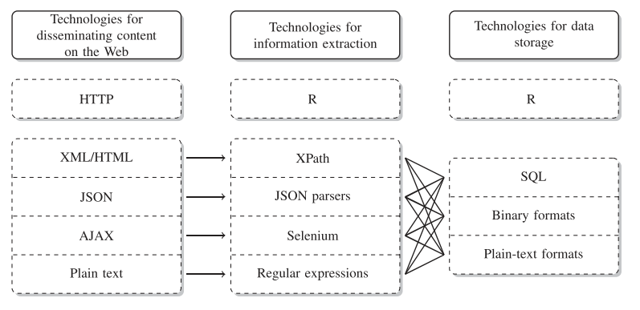
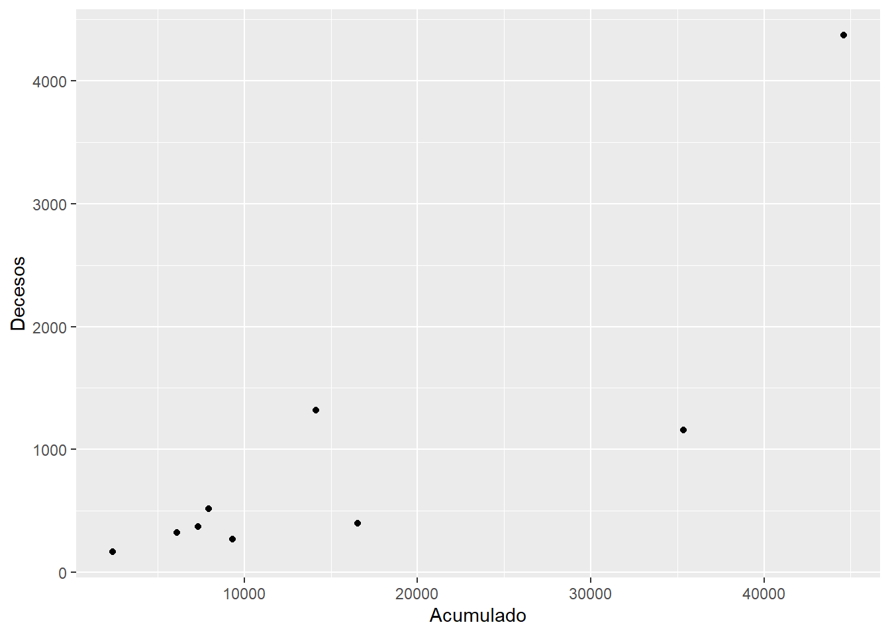
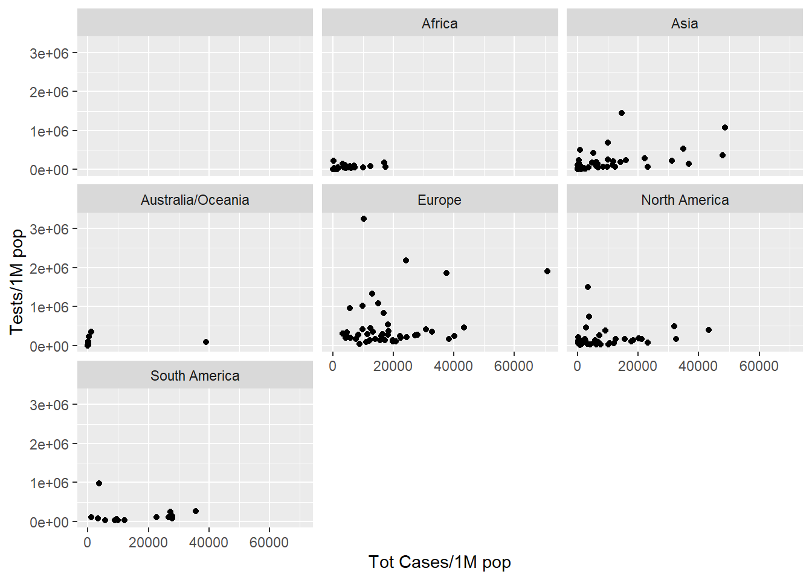

Chapter 2 Scraping Web
La definición del scraping web que se toma en este documento proviene de (???) que expresa:
El Web Scraping es la recolección automática de información de los sitios web. (obviamente no a través de un humano usando un navegador web).
Un tema dentro del scraping web son las denominadas APIs (Application Programming Interface), estas son entradas a las páginas web diseñadas por los administradores de la página web, por lo mismo no siempre contienen toda la información que se desea. Aunque las API no son tan ubicuas como deberían, puede encontrar API para muchos tipos de información. Interesado en la música? Hay algunas API diferentes que pueden darle canciones, artistas, álbumes e incluso información sobre estilos musicales y artistas relacionados. ¿Necesitas datos deportivos? ESPN proporciona API para información de atletas, puntajes de juegos y más. Google tiene docenas de API en su sección de Desarrolladores para traducciones de idiomas, análisis, geolocalización y más.
2.1 Pasos para la recopilación de información
Siguiendo a (???) que establece cinco pasos al momento de decidir recopilar información mediante el scraping web, estos pasos son:
- Asegúrese de saber exactamente qué tipo de información necesita. Esto puede ser específico (
el producto interno bruto de todos los países de la OCDE durante los últimos 10 años'') o vago (opinión de la gente sobre el teléfono de la empresa X’‘, ``colaboración entre miembros del Senado de los Estados Unidos’’). - Averigüe si hay fuentes de datos en la Web que puedan proporcionar información directa o indirecta sobre su problema. Si está buscando hechos concretos, esto probablemente sea fácil. Si está interesado en conceptos bastante vagos, esto es más difícil.
La página de inicio de la embajada de un país podría ser una fuente valiosa para la acción de política exterior que a menudo se oculta detrás del telón de la diplomacia. Los tweets pueden contener tendencias de opinión sobre casi todo, las plataformas comerciales pueden informar sobre la satisfacción de los clientes con los productos, las tarifas de alquiler en los sitios web de propiedades pueden contener información sobre el atractivo actual de los barrios de la ciudad …
- Desarrolle una teoría del proceso de generación de datos cuando busque fuentes potenciales. ¿Cuándo se generaron los datos, cuándo se cargaron en la Web y quién lo hizo? ¿Existen áreas potenciales que no están cubiertas, son consistentes o precisas, y puede identificarlas y corregirlas?
- Equilibrar las ventajas y desventajas de las posibles fuentes de datos. Los aspectos relevantes pueden ser la disponibilidad (¡y la legalidad!), los costos de recolección, la compatibilidad de nuevas fuentes con la investigación existente, pero también factores muy subjetivos como la aceptación de la fuente de datos por parte de otros. También piense en posibles formas de validar la calidad de sus datos. ¿Existen otras fuentes independientes que brinden información similar para que sean posibles verificaciones cruzadas aleatorias? En caso de datos secundarios, ¿puede identificar la fuente original y verificar los errores de transferencia?
- ¡Toma una decisión! Elija la fuente de datos que le parezca más adecuada, documente los motivos de la decisión y comience con los preparativos para la recopilación. Si es factible, recopile datos de varias fuentes para validar las fuentes de datos. Muchos problemas y beneficios de varias estrategias de recopilación de datos salen a la luz solo después de la recopilación real.
2.2 Tecnologías de diseminación, extracción y almacenamiento Web
Una vez elegida la fuente de datos (página web) y al menos con la intuición de lo que se quiere obtener, el siguiente paso es decidir el mecanismos para el scraping (raspado), esto esta relacionado al tipo de pagina web, ver si esta ofrece una entrada API y conocer sus limitaciones puede ser un punto de partida. Esto se denomina Technologies for disseminating, extracting, and storing web data Collecting, en el marco del uso de R la figura muestra las interacciones entre ellas.
 Tecnologías para difundir, extraer y almacenar datos web (considerando el entorno de R)
2.3 Librerías en R
El siguiente cuadro presenta las librerías en R relacionadas al web Scraping, incluyendo los servicios API, que a la fecha del proyecto alcanza a 761 librerías, esto representa el \(5.02\)% de las librerías en en R.
2.4 Librería rvest
Rvest es parte del universo tidyverse y esta orientada al scrape de páginas web. La instalación es usual:
#desde CRAN
install.packages("rvest")
#la versión en desarrollo desde github
devtools::install_github("tidyverse/rvest")Existe la herramienta selectorgadget disponible en http://selectorgadget.com/, esta permite interactuar con las páginas web para seleccionar partes del documento usando un CSS selector. Las funciones mas importantes dentro de rvest son:
- read_html para cargar la estructura de la página
- html_nodes para extraer información de la página según el CSS selector
- html_text para extraer texto de un html_nodes
- html_table para extraer tablas y ponerlas en data frame
2.5 Ejemplo: COVID, Bolivia segura, Worldometers
## Loading required package: xml2bs1<-read_html("https://www.boliviasegura.gob.bo/index.php")
bs2<-read_html("https://www.boliviasegura.gob.bo/datos.php")
aux<-html_nodes(bs1,".casos")
casos<-html_text(aux)
aux<-html_nodes(bs1,".recuperados")
recup<-html_text(aux)
aux<-html_nodes(bs1,".decesos")
muerte<-html_text(aux)
html_text(html_nodes(bs1,".card-text"))## [1] "Ministerio de Salud reporta 86 contagios nuevos de COVID-19 y el total sube a 142.561"
## [2] "Ministerio de Salud reporta 126 contagios nuevos de coronavirus en todo el país"
## [3] "Sube a 112.055 el número de pacientes recuperados de coronavirus en una jornada con 34 nuevos contagios"
## [4] "BENEFICIARIOS"
## [5] "BENEFICIARIOS"
## [6] "BENEFICIARIOS"
## [7] "29 de Octubre de 2020"
## [8] "Medidas de carácter excepcional y temporal para fomentar la cultura de donación voluntaria, altruista e informada de plasma hiperinmune de personas que hayan superado el Coronavirus (COVID-19)."
## [9] "28 de Octubre de 2020"
## [10] "Se amplía la vigencia de las medidas de la fase de posconfinamiento con vigilancia comunitaria activa de casos de Coronavirus (COVID-19), hasta el 30 de noviembre."
## [11] "29 de Septiembre de 2020"
## [12] "Se Amplía la vigencia de las medidas de la fase posconfinamiento hasta el 31 de octubre y se extiende el horario de circulación de vehículos y personas de 5 de la mañana a media noche."tbs<-html_table(bs2,fill = T)
View(tbs)
mun<-tbs[[12]]
table(mun$`Nivel Anterior`,mun$`Nivel Actual`)##
## Alto Medio Moderado
## Alto 32 10 1
## Medio 1 210 21
## Moderado 0 1 63## 'data.frame': 9 obs. of 5 variables:
## $ Departamento: chr "Beni" "Chuquisaca" "Cochabamba" "La Paz" ...
## $ Hoy : int 0 8 6 21 2 0 4 31 31
## $ Acumulado : chr "7,314" "7,892" "14,033" "35,109" ...
## $ Decesos : chr "374" "511" "1,301" "1,137" ...
## $ Recuperados : chr "5,173" "6,734" "12,222" "30,192" ...## [1] "7,314" "7,892" "14,033" "35,109" "6,063" "2,384" "9,178"
## [8] "44,275" "16,416"## [1] 5 5 6 6 5 5 5 6 6## [1] "7,3" "7,8" "14," "35," "6,0" "2,3" "9,1" "44," "16,"## integer(0)## [1] "7,314" "7,892" "14,033" "35,109" "6,063" "2,384" "9,178"
## [8] "44,275" "16,416"t1$Acumulado<-as.numeric(gsub(",","",t1$Acumulado))
t1$Decesos<-as.numeric(gsub(",","",t1$Decesos))
t1$Recuperados<-as.numeric(gsub(",","",t1$Recuperados))
library(ggplot2)
ggplot(t1,aes(Acumulado,Decesos))+geom_point()
### worldometers
wm<-read_html("https://www.worldometers.info/coronavirus/")
tabla<-html_table(wm)
t2<-tabla[[1]]
str(t2)## 'data.frame': 235 obs. of 19 variables:
## $ # : int NA NA NA NA NA NA NA NA 1 2 ...
## $ Country,Other : chr "North America" "Asia" "South America" "Europe" ...
## $ TotalCases : chr "12,515,058" "14,606,205" "10,075,827" "12,641,448" ...
## $ NewCases : chr "+149,160" "+95,435" "+49,199" "+234,920" ...
## $ TotalDeaths : chr "367,228" "258,412" "304,153" "301,708" ...
## $ NewDeaths : chr "+1,679" "+1,543" "+757" "+4,863" ...
## $ TotalRecovered : chr "8,068,688" "13,044,784" "8,986,952" "4,638,343" ...
## $ NewRecovered : chr "+59,083" "+85,972" "+25,191" "+142,351" ...
## $ ActiveCases : chr "4,079,142" "1,303,009" "784,722" "7,701,397" ...
## $ Serious,Critical : chr "22,904" "23,634" "17,580" "28,293" ...
## $ Tot Cases/1M pop : chr "" "" "" "" ...
## $ Deaths/1M pop : chr "" "" "" "" ...
## $ TotalTests : chr "" "" "" "" ...
## $ Tests/1M pop : chr "" "" "" "" ...
## $ Population : chr "" "" "" "" ...
## $ Continent : chr "North America" "Asia" "South America" "Europe" ...
## $ 1 Caseevery X ppl : chr "" "" "" "" ...
## $ 1 Deathevery X ppl: chr "" "" "" "" ...
## $ 1 Testevery X ppl : chr "" "" "" "" ...aux<-is.na(t2$`#`)
t2<-t2[!aux,]
for(i in c(3:15,17:19)){
print(i)
t2[,i]<-gsub("+","",t2[,i])
t2[,i]<-as.numeric(gsub(",","",t2[,i]))
}## [1] 3
## [1] 4
## [1] 5
## [1] 6
## [1] 7## Warning: NAs introducidos por coerción## [1] 8## Warning: NAs introducidos por coerción## [1] 9## Warning: NAs introducidos por coerción## [1] 10
## [1] 11
## [1] 12
## [1] 13
## [1] 14
## [1] 15
## [1] 17
## [1] 18
## [1] 19## [1] 484147 86371 102766 279353 449447 414750 72549 541193
## [9] 107692 293569 19444 141851 84098 278886 62837 141135
## [17] 242247 74944 456301 83605 17691 245248 14945 206174
## [25] 46441 182120 246014 21318 531725 183376 265302 95268
## [33] 259806 53342 370108 32500 271766 240244 1445549 28999
## [41] 167666 365234 228112 57802 204664 126966 73108 65845
## [49] 193326 25588 1310 22942 149809 287927 24334 13231
## [57] 197007 77706 1076533 99007 117664 167215 32660 139769
## [65] 51237 40957 54463 143251 165356 352114 107520 13913
## [73] 3308 67473 244808 NA 15056 190070 109209 693184
## [81] 1024135 17610 197490 3230 71039 132448 75811 357731
## [89] 53114 413340 342270 48461 160363 1855324 5564 7524
## [97] 298642 3292 16590 12709 28290 12419 NA 6484
## [105] 53128 5154 3678 277128 NA NA 93624 257108
## [113] 34196 182523 2888 114865 11260 269937 185276 19787
## [121] 139584 831604 81841 96774 54431 213453 NA 429033
## [129] 47400 3461 24443 NA 87863 1892485 499266 NA
## [137] 43998 33946 1079305 47405 6731 66048 161084 400174
## [145] 28415 NA 62882 13997 4027 9048 100810 1071
## [153] 22008 NA 15553 13850 NA 554 10973 228492
## [161] NA 5948 1620 12764 89566 351886 950740 30601
## [169] 163481 239861 2184374 NA 136306 4733 163822 3271
## [177] 4380 NA 1320514 NA 3243000 NA 218533 28689
## [185] 236696 198401 11874 736015 138162 1494887 52755 127437
## [193] 162764 69721 39757 385113 68886 171364 66134 6495
## [201] 14923 55469 8489 56808 NA 9501 63167 209045
## [209] 453665 166 115562 971843 NA NA 120922 NA
## [217] NA 102902 111163## Warning: Removed 20 rows containing missing values (geom_point).
2.6 Ejemplo: Ultracasas
- Motivación: Explorar el mercado de casas en Bolivia
ultra<-read_html("https://www.ultracasas.com/buscar/casa-en-venta--en--la-paz---la-paz?page=1")
#titulo
aux1<-html_text(html_nodes(ultra,".line-height-30px"))[-1] #zona
aux2<-html_text(html_nodes(ultra,".text-ellipsis"))[-1][seq(2,24,2)]
#precio
aux3<-html_text(html_nodes(ultra,"h4"))[-c(1:2,15:17)]
#metros, dormitorios, baños
aux<-html_text(html_nodes(ultra,".icon-default-color"))
aux4<-aux[seq(1,36,3)]#dormitorios
aux5<-aux[seq(2,36,3)]#baños/duchas
aux6<-aux[seq(3,36,3)]#metros2
#base inicial
bd0<-data.frame(titulo=aux1,zona=aux2,precio=aux3,bed=aux4,bath=aux5,m2=aux6)
for(i in 2:26){
print(i)
www<-paste0("https://www.ultracasas.com/buscar/casa-en-venta--en--la-paz---la-paz?page=",i)
ultra<-read_html(www)
#titulo
aux1<-html_text(html_nodes(ultra,".line-height-30px"))[-1] #zona
aux2<-html_text(html_nodes(ultra,".text-ellipsis"))[-1][seq(2,24,2)]
#precio
aux3<-html_text(html_nodes(ultra,"h4"))[-c(1:2,15:17)]
#metros, dormitorios, baños
aux<-html_text(html_nodes(ultra,".icon-default-color"))
aux4<-aux[seq(1,36,3)]#dormitorios
aux5<-aux[seq(2,36,3)]#baños/duchas
aux6<-aux[seq(3,36,3)]#metros2
#base inicial
bd1<-data.frame(titulo=aux1,zona=aux2,precio=aux3,bed=aux4,bath=aux5,m2=aux6)
bd0<-rbind(bd0,bd1)
}## [1] 2
## [1] 3
## [1] 4
## [1] 5
## [1] 6
## [1] 7
## [1] 8
## [1] 9
## [1] 10
## [1] 11
## [1] 12
## [1] 13
## [1] 14
## [1] 15
## [1] 16
## [1] 17
## [1] 18
## [1] 19
## [1] 20
## [1] 21
## [1] 22
## [1] 23
## [1] 24
## [1] 25
## [1] 262.7 Ejemplo: Ketal
Una de las potencialidades del scraping es poder rescatar información contenida en páginas web, según la estructura de esta, en esta sección se presenta un ejemplo del código y la recolección de información que puede realizarse. Para esto se eligió la página de supermercados Ketal que es abierta y publica los precios de sus distintos productos de forma categorizada por tipo de productos.
El estudio de esta pagina tiene el principal objetivo de mostrar el proceso de extracción, el uso potencial de la información esta relacionada a tener la variación de los precios y para futuros estudios se podría completar el ejercicio incluyendo la parte de la demanda mediante la encuesta de presupuestos familiares y poder así pronosticar la inflación dentro de este sector y para la población potencial que acude a supermercados.
El ejemplo presenta el proceso del scraping para 8 grupo de productos:
- Carne de aves
- Carne de cerdo
- Carne de res
- Pescado
- Leches
- Aceites
- Frutas y verduras
- Dulces
Se emplea la librería rvest, que es un paquete diseña para para facilitar la descarga y la manipulación de HTML y XML. También se utiliza la extensión Selector Gadget https://selectorgadget.com, este permite la identificación de las estructuras de las páginas web.
El objetivo del raspado es obtener el nombre del producto, su código, y el precio. Utilizando el selector gadget se identifica que en \(.product-name\) se guardan los nombres, en \(.price.product-price\) el precio del producto y en \(data-id-product\) el identificador del producto. En R el código es:
#librerías para el raspado
library(rvest)
#Enlaces de los grupos de productos
ave <- read_html("https://www.ketal.com.bo/209-aves")
cerdo<-read_html("https://www.ketal.com.bo/208-cerdo")
res<-read_html("https://www.ketal.com.bo/210-res")
fish<-read_html("https://www.ketal.com.bo/17060162-pescados")
leches<-read_html("https://www.ketal.com.bo/53-leches-liquidas")
aceites<-read_html("https://www.ketal.com.bo/272-aceites-y-vinagres")
frutaver<-read_html(
"https://www.ketal.com.bo/50-frutas-y-verduras?id_category=50&n=150")
dulce<-read_html(
"https://www.ketal.com.bo/15-chocolates-y-golosinas?id_category=15&n=150")
#definición de la base de datos que guarda la información
bd<-NULL
#Algoritmo del raspado de los 8 productos
k<-1
for(i in list(ave,cerdo,res,fish,leches,aceites,frutaver,dulce)){
print(k)
name<-html_attr(html_nodes(i,".product-name"),"title")[-1]
precio<-html_text(
html_nodes(i,".price.product-price"),trim=T)[seq(1,length(name)*2,2)]
code<-html_attr(html_nodes(i,".add_to_compare"),"data-id-product")
bd<-rbind(bd,data.frame(name,precio,code))
k<-k+1
}
#se identifica el día
day<-substr(Sys.time(),1,10)
#se guarda la informacion en base al dia del raspado
bd$day<-day
save(bd,file = paste0(day,".RData"))2.8 Ejemplo: Ministerio de Educación
library(rvest)
library(foreign)
library(xlsx)
########################
bd<-read.dta("mmUE.dta")
rue<-bd$cod_ue_det
rue<-unlist(strsplit(rue,";"))
bd<-data.frame(matrix(0,1,78))
k<-1
for(i in 325:length(rue)){
print(i)
urlmin<-paste0("http://seie.minedu.gob.bo/reportes/mapas_unidades_educativas/ficha/ver/",rue[i])
ue <- read_html(urlmin,encoding = "UTF-8")
jj<-grepl("Error was",unlist(strsplit(html_text(html_nodes(ue,"strong"))[1:2],":"))[c(2)])
if(jj==T){
next()
}
#nombre id (2)
bd[k,1:2]<-unlist(strsplit(html_text(html_nodes(ue,"strong"))[1:2],":"))[c(2,4)]
#Informacion administrativa (12)
bd[k,3:14]<-html_text(html_nodes(ue,"dd"))
#matricula #promovidos #reprobacion #abandono # (60)
#matricula
for(j in 1:4){
bd[k,(15*j):(14+15*j)]<-as.integer(unlist(html_table(ue)[j])[-c(1:3)])
}
#servicios (4)
bd[k,75:78]<-html_text(html_nodes(ue,"strong"))[18:21]
k<-k+1
}
write.xlsx(bd,"ue2017.xlsx",row.names = F)2.9 Ejemplo, informacion COVID-19 en Bolivia
library(rvest)
#paso 0: Estadísticas del covid-19 en Bolivia
#paso 1: cargar la www de interés
bs<-read_html("https://www.boliviasegura.gob.bo/")
ww<-read_html("https://www.worldometers.info/coronavirus/")
#paso 2: Raspar la información de interés
node0<-html_nodes(bs,"h1")
node1<-html_text(node0)
node2<-as.numeric(node1)
barplot(node2,legend.text = c("Confirmados","Recuperados","Muertes"))
aux<-html_nodes(bs,".mapanuevos")
#paso 3: trabajando con tablas
tabla<-html_table(bs,fill = T)
tabla[[2]]
#paso 4: limpieza
#paso 5: Análisis2.10 APIs
Conocida también por la sigla API,“application programming interface”, es un conjunto de sub rutinas, funciones y procedimientos (o métodos, en la programación orientada a objetos) que ofrece cierta biblioteca para ser utilizado por otro software. Ofrece una entrada a los datos que distribuye el API.
2.10.1 API Banco Mundial
La API ofrece acceso a las estadísticas que genera el Banco Mundial, existe un set extenso de estadísticas de la mayoría de los países. La API ofrece mas de 16000 indicadores de series de tiempo, muchos de los indicadores tienen una cobertura de 50 años. La API incluye el acceso a 45 bases de datos, incluyendo:
- World Development Indicators
- International Debt Statistcs
- Doing Business
- Human Capital Index
- Subnational Poverty
- Y otros, ver
En R se puede acceder mediante la librería wbstats.
#install.packages("wbstats")
#paso 1, instalar el rtools: https://cran.r-project.org/bin/windows/Rtools/
#paso 2, instalar devtools
install.packages("devtools")
#paso 3, cargar el devtools
library(devtools)
#paso4, instalar wbstats
install_github("nset-ornl/wbstats")
library(wbstats)
#acceso a todos los indicadores disponibles
wbindex<-wbindicators("es")
#acceso al catalogo de datos
wbcat<-wbdatacatalog()
#búsqueda de indicador
index_edu<-wbsearch(pattern = "education")
index_sal<-wbsearch(pattern = "health")
# ver los países y sus códigos
wbpais<-wbcountries()
#Comando para extraer los indicadores
wb(country = "BOL",indicator = "NY.GDP.MKTP.CD", startdate = 2000, enddate = 2016)2.10.2 API Google trends
La libraría gtrendsR permite acceder a la API de google trends, esta permite acceder a las tendencias de búsqueda que se realizan mediante el motor de búsqueda de Google.
install.packages("gtrendsR")
library(gtrendsR)
aux<-countries
res <- gtrends("Coronavirus", geo = c("BO"))
bd_cov<-res$interest_over_time
library(ggplot2)
bd_cov$hits<-as.numeric(gsub("<","",bd_cov$hits))
ggplot(bd_cov,aes(date,hits))+geom_line()
plot(res)
eleccion2020<-gtrends(c("Luis Arce","Carlos Mesa","Fernando Camacho"), geo = c("BO"),time="today 3-m")
plot(eleccion2020)
library(knitr)
kable(head(res$interest_over_time,10))2.10.3 API Google Maps
R tiene la librari googleway que permite tener acceso a la API de google maps, es necesario una llave de autentificación.
Para la llave seguir los pasos en el enlace
2.11 Ejercicios Propuestos
- Extraer la fecha, y el precio de compra y venta del dolar de la página https://www.bcb.gob.bo
- Usando la página https://www.trabajopolis.bo/ seleccionar un departamento y armar una base de dato de ofertas laborales
- Armar una base de datos en base a la página https://www.infocasas.com.bo
- Explorar librarias API con acceso a Youtube y encontrar los 10 videos con más visualizaciones que incluyan a Bolivia en su titulo.
- Explorar la libraria gtrendsR y explorar en que meses en Bolivia es mas frecuente la búsqueda de
- Usar la informacion de worldometers y generar un gráfico de contagios por millon de los distintos paises.